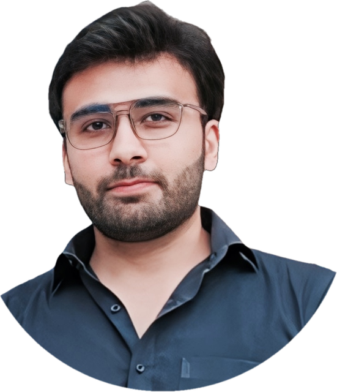

Owns the ML serving and data platform: 20 vision models, 8 million predictions a day, p95 27.2 s → 1.25 s. 2 million messages a day from 5K+ IoT devices.
OwlSense social-media intelligence on a multi-agent harness with local LLMs. 23× faster LLM inference; one serving layer for 100K+ requests a day, $50K a year saved.
Real-time video analytics across 100+ cameras, models running in parallel into one decision layer. +50% FPS from custom DeepStream plugins.
AI detection on 450-megapixel satellite images, 95% accurate on objects under 10 pixels, with 80% less analysis time. Mission-critical work under strict security limits.
A tale of synchronization and streams, on stage at PyCon Pakistan 2024. The talk is on YouTube.
Challenges and opportunities of deep learning for app interfaces. ICT Endowment R&D Funds award.
ArcFace face recognition on TensorRT 8 (Aug 2022), plus MLP examples (Jan 2022).
Top of the programme, CGPA 4.0 / 4.0. BS Computer Science at the University of Gujrat, Top Project award.
Cut p95 latency in production from 27.2 seconds to 1.25.
20 vision models on shared GPUs, serving 500+ devices in the field.
Cut peak VRAM on the same workload and ended a recurring crash.
One shared serving layer for over 3 million requests a month, on far less cloud compute.
AI detection on satellite images, each the size of 217 Full HD screens.